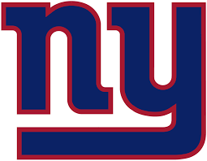

New York Giants
Favorite Moments
- The Super Bowl win against the Patriots
- The helmet catch
- Drafting Malik Nabers
Best Seasons
- Super Bowl Season in 2008
- Super Bowl Season in 2012
See my Favorite Players
- Malik Nabers
- Victor Cruz
- Eli Manning
Favorite Players
- Malik Nabers
- Victor Cruz
- Eli Manning
Favorite Giants Moments
- Super Bowl Win 2008
- The Helmet Catch
- Drafting Malik Nabers